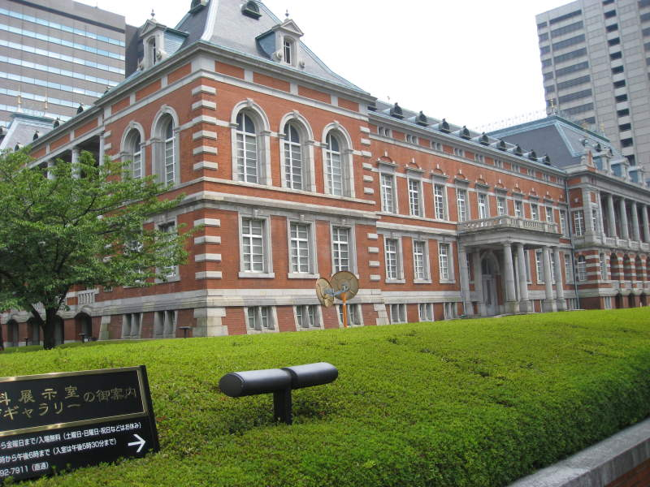

Tokyo(links to sections of Tokyo at bottom)
Here's our first view of a train in Japan. See the large TV behind it, with some sort of anime face.
Tokyo
has a popular fish market in Tsukiji. I arrived on a Sunday
afternoon, when the market was totally closed and desolate. There
was plenty of seafood for sale in the area though.
These looked kind of weird. I wouldn't want to stick my hand in the water.
In front of the Pokemon store, two little girls pose for their photo.

This is the Old Ministry of Justice Building.
This is how I knew that.
Here's a random summer festival we passed by on a Tokyo train.
We
asked at the hotel where the nearest "revolving sushi" joint was.
We ended up here, where you order your food on a computer, and
sure enough, within minutes you see your plate of food shoot out on the
conveyor belt.
An exquisitely carved statue in Tokyo.
Less exquisitely carved but much more adorable animal statues in Tokyo.
Here's a lady taking care of her chimp.
Buildings in Tokyo, and Tokyo in general, were brightly colored.
Japan, land of the rising sun. They certainly are not shy of eggs in Japan. The meat was some sort of pork I think.
On
the trains, stops were displayed on video screens like this one.
I think I got pretty good at remembering kanji letters, thanks to
the station names. In fact, train stations were a good way to
learn some of the kanji, because often they were accompanied by the
"romanized" (English-lettered) text.
In a mall, a man makes fish cookies.
A
pretty butterfly on a pretty flower. Ever since I saw on
Discovery what a preying mantis does to these things, I've learned to
appreciate them even more.
Japan, and especially Tokyo, has all sorts of flashy buildings that come in handy if you forget to shave and need a mirror.
The ryokanAsakusaAkihabaraShinjukuKawaguchiTokyo TowerCleaning FestivalHibiya GardenImperial PalaceHamarikyu GardenRoppongi HillsShowa Kinen ParkUenoBack